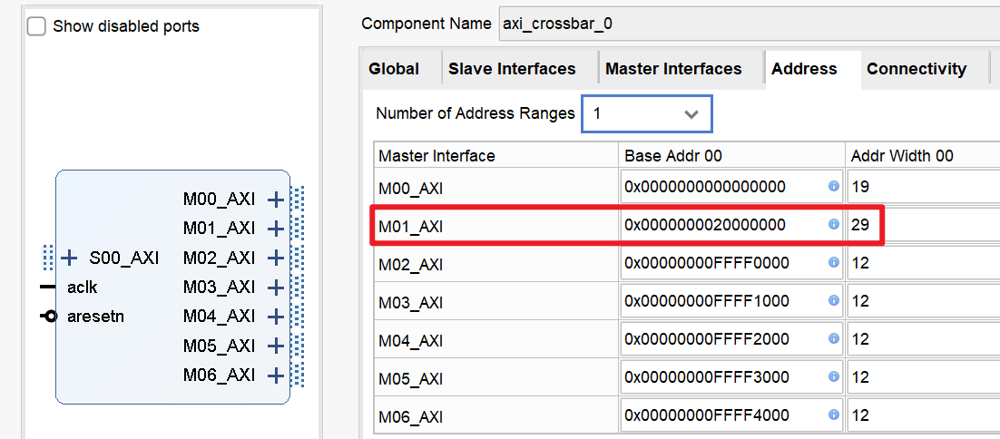
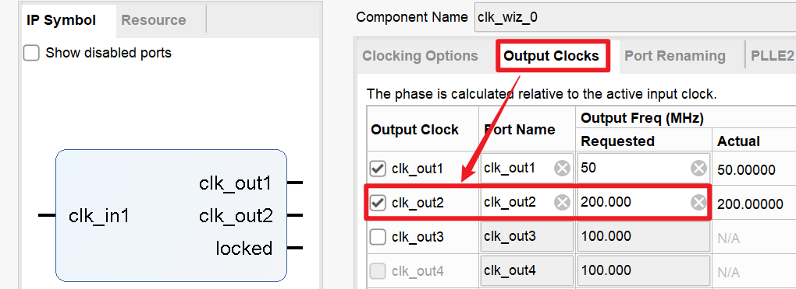
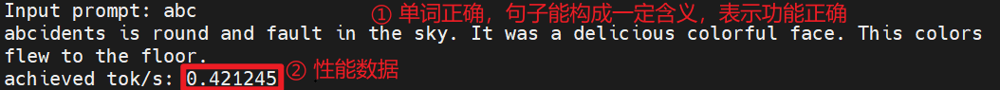

LLAMA2推理测试
EGO1开发板可用作主存物理介质的存储资源不足，若想在SoC上运行LLAMA2推理程序，首先需把代码移植到Minisys开发板的模板工程。
移植方法
首先，在Vivado工程设置中，把FPGA的芯片型号更换成xc7a100tfgg484-1。
更换芯片型号之后，IP核的图标会出现红色的锁，提示我们需要更新IP核。在任意IP核上右键，点击“Report IP Status”，随后在Vivado界面下方点击“Upgrade”按钮。
下载Minisys模板工程，参照其约束文件，修改相应的引脚约束代码，去除多余的一组数码管段选信号。
参照实验1-实验原理-功能部件-3.1 Block Memory的容量修改，把bram_axi IP核的容量修改为32bit × 112640。
参照计算机组成原理实验2-附录B.DDR控制器的使用，创建MIG IP核。在设置引脚约束时，使用DDR3_Minisys_1.35V.ucf。
把AXI Crossbar IP核的Master接口数量改为7，并按照图7-1所示修改其地址空间。

修改时钟IP核，新增用于MIG IP核的时钟信号，如图7-2所示。

在miniRV_SoC.v或miniLA_SoC.v中，生成MIG IP核所需的复位信号mig_rst、时钟信号mig_clk，并把DDR初始化完成的标志位信号ddr_init_done添加到SoC的复位信号逻辑当中，如下列代码所示。
`ifdef RUN_TRACE
wire sys_clk = fpga_clk;
wire sys_rst = fpga_rst;
`else
wire pll_clk1, pll_clk2;
wire pll_lock;
wire sys_clk = pll_lock & pll_clk1;
wire mig_clk = pll_lock & pll_clk2;
wire ddr_init_done;
wire mig_rst = fpga_rst | !pll_lock;
`ifdef USE_DDR
wire sys_rst = fpga_rst | !pll_lock | !ddr_init_done;
`else
wire sys_rst = fpga_rst | !pll_lock;
`endif
clk_wiz_0 U_clkgen (
.clk_in1 (fpga_clk),
.locked (pll_lock),
.clk_out1 (pll_clk1),
.clk_out2 (pll_clk2)
);
`endif
在miniRV_SoC.v或miniLA_SoC.v中实例化MIG IP核，如下列代码所示。
`ifndef RUN_TRACE
`ifdef USE_DDR
mig_wrap U_mig (
.aclk (sys_clk),
.aresetn (!mig_rst),
.s_axi_awaddr (mig_awaddr ),
.s_axi_awlen (mig_awlen ),
.s_axi_awsize (mig_awsize ),
.s_axi_awburst (mig_awburst),
.s_axi_awvalid (mig_awvalid),
.s_axi_awready (mig_awready),
.s_axi_wdata (mig_wdata ),
.s_axi_wstrb (mig_wstrb ),
.s_axi_wlast (mig_wlast ),
.s_axi_wvalid (mig_wvalid ),
.s_axi_wready (mig_wready ),
.s_axi_bresp (mig_bresp ),
.s_axi_bvalid (mig_bvalid ),
.s_axi_bready (mig_bready ),
.s_axi_araddr (mig_araddr ),
.s_axi_arlen (mig_arlen ),
.s_axi_arsize (mig_arsize ),
.s_axi_arburst (mig_arburst),
.s_axi_arvalid (mig_arvalid),
.s_axi_arready (mig_arready),
.s_axi_rdata (mig_rdata ),
.s_axi_rresp (mig_rresp ),
.s_axi_rlast (mig_rlast ),
.s_axi_rvalid (mig_rvalid ),
.s_axi_rready (mig_rready ),
.mig_sys_clk (mig_clk),
.ddr_init_done (ddr_init_done),
.ddr3_addr (ddr3_addr ),
.ddr3_ba (ddr3_ba ),
.ddr3_cas_n (ddr3_cas_n ),
.ddr3_ck_n (ddr3_ck_n ),
.ddr3_ck_p (ddr3_ck_p ),
.ddr3_cke (ddr3_cke ),
.ddr3_ras_n (ddr3_ras_n ),
.ddr3_we_n (ddr3_we_n ),
.ddr3_dq (ddr3_dq ),
.ddr3_dqs_n (ddr3_dqs_n ),
.ddr3_dqs_p (ddr3_dqs_p ),
.ddr3_reset_n (ddr3_reset_n),
.ddr3_cs_n (ddr3_cs_n ),
.ddr3_dm (ddr3_dm ),
.ddr3_odt (ddr3_odt )
);
`else
assign mig_awready = 'h0;
assign mig_wready = 'h0;
assign mig_bresp = 'h0;
assign mig_bvalid = 'h0;
assign mig_arready = 'h0;
assign mig_rdata = 'h0;
assign mig_rresp = 'h0;
assign mig_rlast = 'h0;
assign mig_rvalid = 'h0;
`endif
// 外设I/O接口电路的模块实例
......
`endif
将MIG IP核连接到AXI Crossbar IP核，如下列代码所示。
axi_crossbar_0 U_bridge (
.aclk (sys_clk),
.aresetn (!sys_rst),
.s_axi_awaddr (cpu_awaddr ),
.s_axi_awlen (cpu_awlen ),
.s_axi_awsize (cpu_awsize ),
.s_axi_awburst (cpu_awburst),
.s_axi_awvalid (cpu_awvalid),
.s_axi_awready (cpu_awready),
.s_axi_awlock (1'b0 ),
.s_axi_awcache (4'h0 ),
.s_axi_awprot (3'h0 ),
.s_axi_awqos (4'h0 ),
.s_axi_wdata (cpu_wdata ),
.s_axi_wstrb (cpu_wstrb ),
.s_axi_wlast (cpu_wlast ),
.s_axi_wvalid (cpu_wvalid ),
.s_axi_wready (cpu_wready ),
.s_axi_bresp (cpu_bresp ),
.s_axi_bvalid (cpu_bvalid ),
.s_axi_bready (cpu_bready ),
.s_axi_araddr (cpu_araddr ),
.s_axi_arlen (cpu_arlen ),
.s_axi_arsize (cpu_arsize ),
.s_axi_arburst (cpu_arburst),
.s_axi_arvalid (cpu_arvalid),
.s_axi_arready (cpu_arready),
.s_axi_arlock (1'b0 ),
.s_axi_arcache (4'h0 ),
.s_axi_arprot (3'h0 ),
.s_axi_arqos (4'h0 ),
.s_axi_rdata (cpu_rdata ),
.s_axi_rresp (cpu_rresp ),
.s_axi_rlast (cpu_rlast ),
.s_axi_rvalid (cpu_rvalid ),
.s_axi_rready (cpu_rready ),
.m_axi_awaddr ({tim_awaddr , uart_awaddr , digled_awaddr , led_awaddr , sw_awaddr , mig_awaddr , bram_awaddr }),
.m_axi_awlen ({tim_awlen , uart_awlen , digled_awlen , led_awlen , sw_awlen , mig_awlen , bram_awlen }),
.m_axi_awsize ({tim_awsize , uart_awsize , digled_awsize , led_awsize , sw_awsize , mig_awsize , bram_awsize }),
.m_axi_awburst ({tim_awburst, uart_awburst, digled_awburst, led_awburst, sw_awburst, mig_awburst, bram_awburst}),
.m_axi_awvalid ({tim_awvalid, uart_awvalid, digled_awvalid, led_awvalid, sw_awvalid, mig_awvalid, bram_awvalid}),
.m_axi_awready ({tim_awready, uart_awready, digled_awready, led_awready, sw_awready, mig_awready, bram_awready}),
.m_axi_wdata ({tim_wdata , uart_wdata , digled_wdata , led_wdata , sw_wdata , mig_wdata , bram_wdata }),
.m_axi_wstrb ({tim_wstrb , uart_wstrb , digled_wstrb , led_wstrb , sw_wstrb , mig_wstrb , bram_wstrb }),
.m_axi_wlast ({tim_wlast , uart_wlast , digled_wlast , led_wlast , sw_wlast , mig_wlast , bram_wlast }),
.m_axi_wvalid ({tim_wvalid , uart_wvalid , digled_wvalid , led_wvalid , sw_wvalid , mig_wvalid , bram_wvalid }),
.m_axi_wready ({tim_wready , uart_wready , digled_wready , led_wready , sw_wready , mig_wready , bram_wready }),
.m_axi_bresp ({tim_bresp , uart_bresp , digled_bresp , led_bresp , sw_bresp , mig_bresp , bram_bresp }),
.m_axi_bvalid ({tim_bvalid , uart_bvalid , digled_bvalid , led_bvalid , sw_bvalid , mig_bvalid , bram_bvalid }),
.m_axi_bready ({tim_bready , uart_bready , digled_bready , led_bready , sw_bready , mig_bready , bram_bready }),
.m_axi_araddr ({tim_araddr , uart_araddr , digled_araddr , led_araddr , sw_araddr , mig_araddr , bram_araddr }),
.m_axi_arlen ({tim_arlen , uart_arlen , digled_arlen , led_arlen , sw_arlen , mig_arlen , bram_arlen }),
.m_axi_arsize ({tim_arsize , uart_arsize , digled_arsize , led_arsize , sw_arsize , mig_arsize , bram_arsize }),
.m_axi_arburst ({tim_arburst, uart_arburst, digled_arburst, led_arburst, sw_arburst, mig_arburst, bram_arburst}),
.m_axi_arvalid ({tim_arvalid, uart_arvalid, digled_arvalid, led_arvalid, sw_arvalid, mig_arvalid, bram_arvalid}),
.m_axi_arready ({tim_arready, uart_arready, digled_arready, led_arready, sw_arready, mig_arready, bram_arready}),
.m_axi_rdata ({tim_rdata , uart_rdata , digled_rdata , led_rdata , sw_rdata , mig_rdata , bram_rdata }),
.m_axi_rresp ({tim_rresp , uart_rresp , digled_rresp , led_rresp , sw_rresp , mig_rresp , bram_rresp }),
.m_axi_rlast ({tim_rlast , uart_rlast , digled_rlast , led_rlast , sw_rlast , mig_rlast , bram_rlast }),
.m_axi_rvalid ({tim_rvalid , uart_rvalid , digled_rvalid , led_rvalid , sw_rvalid , mig_rvalid , bram_rvalid }),
.m_axi_rready ({tim_rready , uart_rready , digled_rready , led_rready , sw_rready , mig_rready , bram_rready })
);
为SoC顶层模块添加DDR输入输出信号，如下列代码所示。
`ifdef USE_DDR
,// DDR Interface
output wire [14:0] ddr3_addr,
output wire [ 2:0] ddr3_ba,
output wire ddr3_cas_n,
output wire [ 0:0] ddr3_ck_p,
output wire [ 0:0] ddr3_ck_n,
output wire [ 0:0] ddr3_cke,
output wire ddr3_ras_n,
output wire ddr3_we_n,
inout wire [15:0] ddr3_dq,
inout wire [ 1:0] ddr3_dqs_n,
inout wire [ 1:0] ddr3_dqs_p,
output wire ddr3_reset_n,
output wire [ 0:0] ddr3_cs_n,
output wire [ 1:0] ddr3_dm,
output wire [ 0:0] ddr3_odt
`endif
在clock.xdc中添加时钟约束语句，如下列代码所示。该语句使得Vivado在综合实现时，把MIG IP核输出的用户时钟与SoC的主时钟当作两个不同时钟域处理，从而避免形成关键路径。
set_clock_groups -asynchronous -group [get_clocks -of_objects [get_pins U_clkgen/clk_out1]] \
-group [get_clocks -of_objects [get_pins U_mig/U_mig/ui_clk]]
在defines.vh头文件中，增加启用DDR的宏定义语句，如下列代码所示。
| defines.vh | |
|---|---|
3 4 5 | |
最后，在虚拟机中编译LLAMA2推理程序，把生成的.coe文件导入bram_axi IP核，运行综合实现并生成比特流，再将比特流下载到任意版本的Minisys开发板进行测试。
DDR芯片的读写测试
在下板运行LLAMA2推理程序之前，可使用ddr_test.bit对开发板的DDR芯片进行测试。若下板后，最低三位的绿色LED依次点亮，则表示开发板的DDR芯片正常。
若测试发现开发板的DDR芯片不可用，报告任课老师，并更换开发板。
上述测试是为了确定开发板的DDR芯片是否正常，而C_TEST里面的测试3则可用于测试你的SoC能否正确读写DDR的数据。
实现DDR控制器之后，可使用每个C_TEST测试目录下的compile_use_ddr.sh脚本编译程序，将C_TEST测试0~2重新下板运行，以确保SoC能够正确访问DDR。
LLAMA2运行效果示例
SoC下板运行LLAMA2的效果如图7-3所示。

在计算机组成原理实验中，我们曾对LLAMA2推理程序进行下板测试。当时提供给同学们的SoC工程使用静态RAM作为主存，其数据访问延迟远低于DDR，因此推理性能也明显高于使用DDR作为主存的SoC。
注意：提升CPU时钟频率后，需相应修改C程序的频率参数
提高CPU时钟频率的方法见常见问题 - 1.7 如何提高CPU主频？
模板工程的CPU时钟默认为50MHz。改变频率后，需要相应地修改C程序中的频率参数，否则程序计时不准确。
具体地，我们需要修改LLAMA2源文件peripheral.h第6行的CPU_CLK_FREQ参数，使其等于实际的CPU频率：
| c_test / 5_llama2.c / peripheral.h | |
|---|---|
6 7 | |